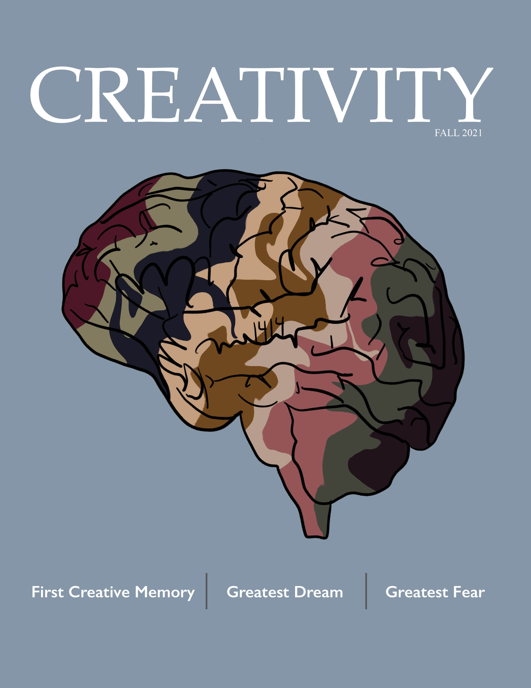
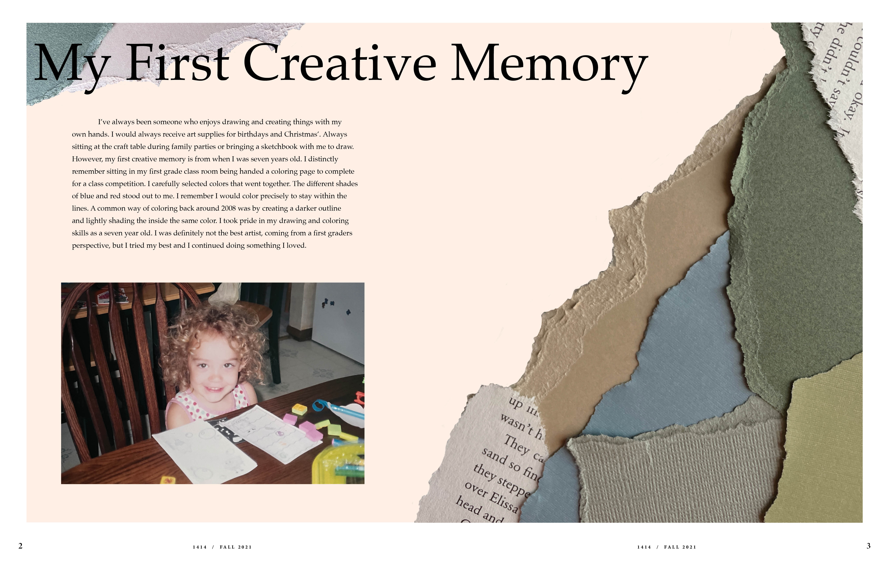
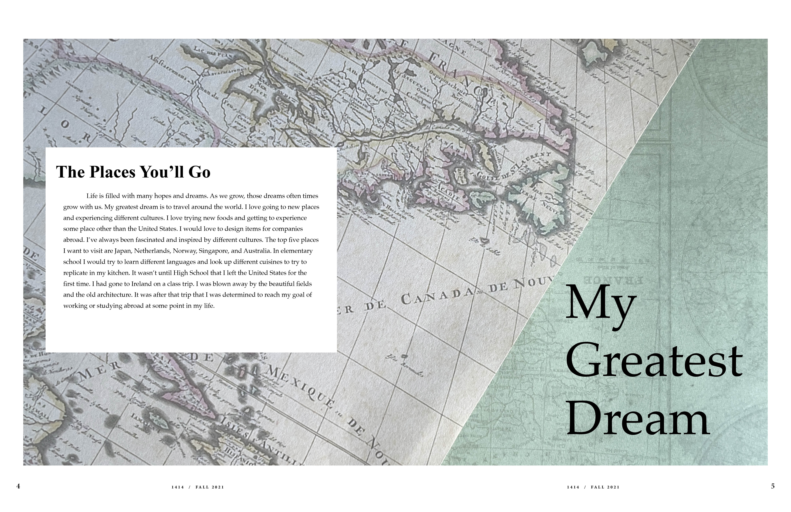
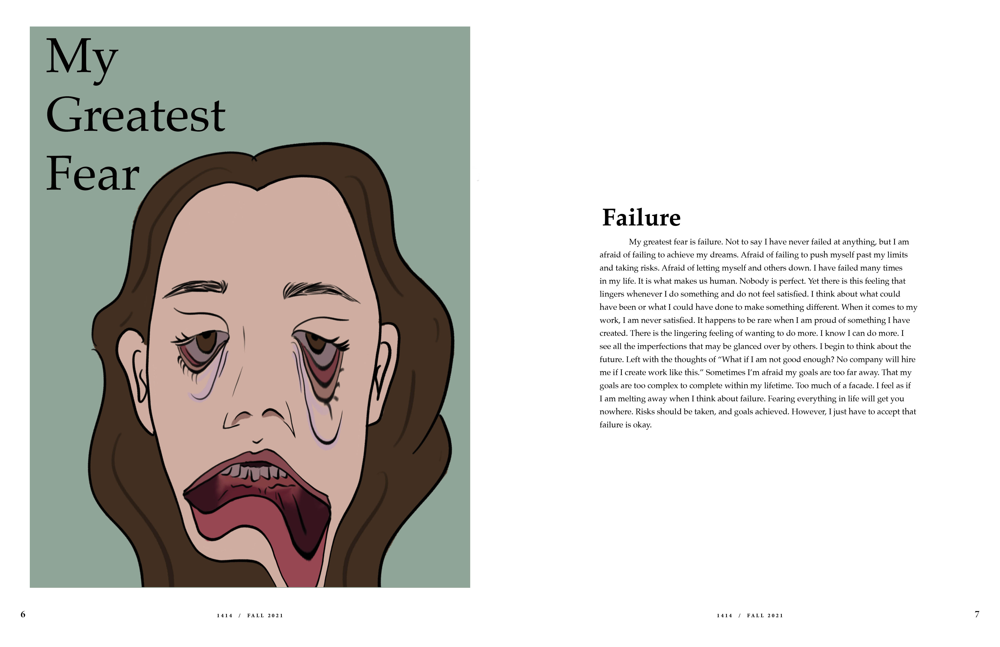

Creativity Magazine

Creativity Magazine
Created using Adobe InDesign this magazine expresses different aspects of the creative process. It takes you through my first design experience, my greatest fears, and my greatest dream.


